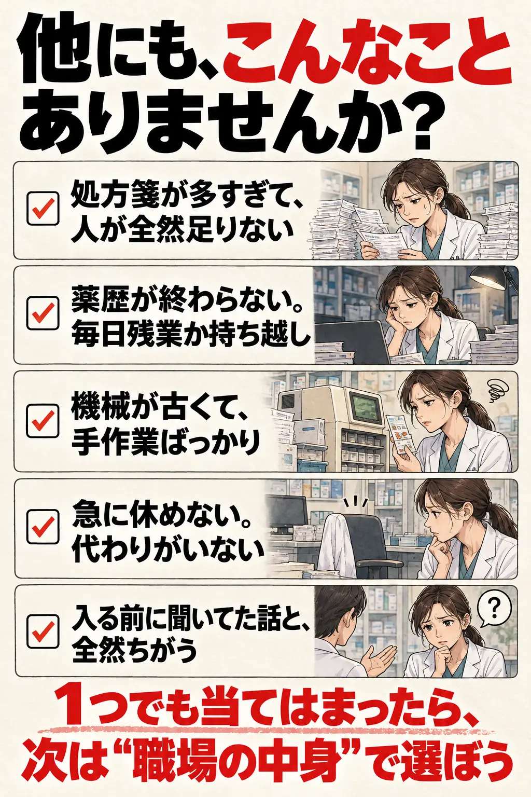
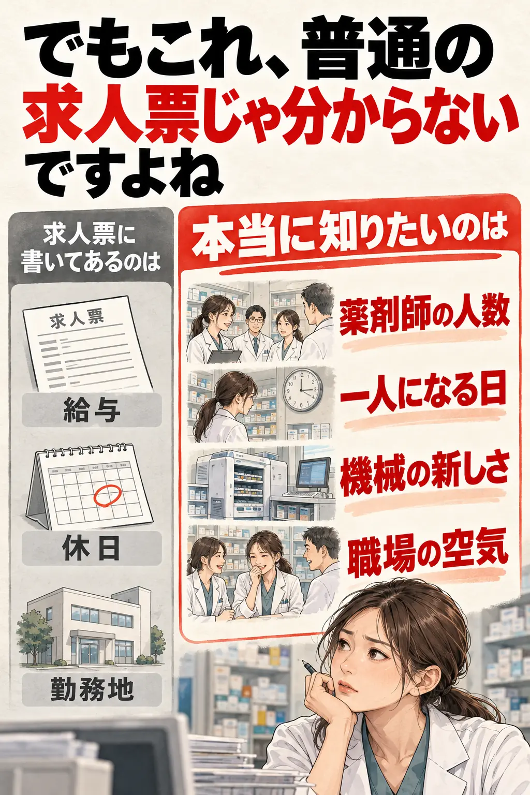
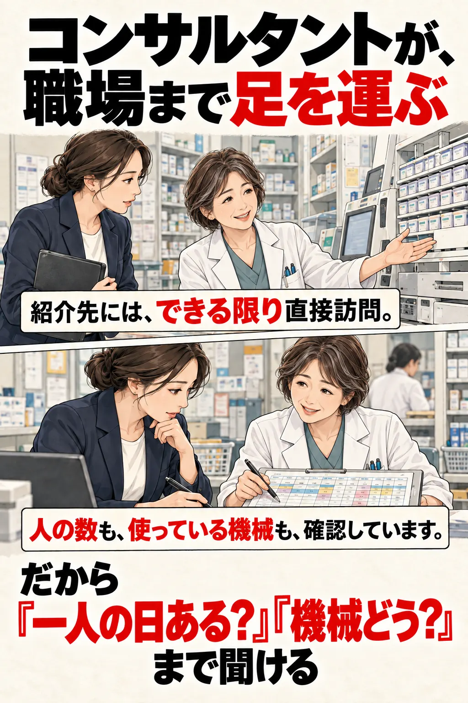
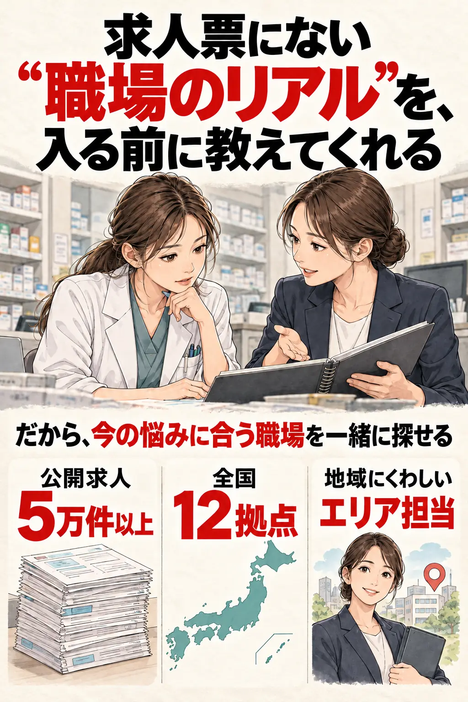

一人薬剤師、正直しんどい
PR
はぁ…今日もお昼ぬき。

これ、就職する前に知りたかったよ…
休憩中でも、患者さんが来たら出る。
監査も自分。迷っても、聞ける人がいない。
何かあったら…って、毎日こわい。
先に教えてよ…って思いません？
他にも、こんなことありませんか？
処方箋が多すぎて、人が全然足りない
薬歴が終わらない。毎日残業か持ち越し
機械が古くて、手作業ばっかり
急に休めない。代わりがいない
入る前に聞いてた話と、全然ちがう
1つでも当てはまったら、次は“職場の中身”で選ぼう

でもこれ、普通の求人票じゃ分からないですよね
求人票に書いてあるのは
給与
休日
勤務地
本当に知りたいのは
薬剤師の人数
一人になる日
機械の新しさ
職場の空気

助かりませんか？
でも、もし転職前にそれが聞けるとしたら
ファルマスタッフ
そこで頼れるのが
薬剤師専門の転職サービス
コンサルタントが、職場まで足を運ぶ
紹介先には、できる限り直接訪問。
人の数も、使っている機械も、確認しています。
だから『一人の日ある？』『機械どう？』まで聞ける

面接にも、一緒に入ってくれる
状況に応じて
聞きづらい条件の確認も、交渉も、サポートしてくれる。
入ってからの『聞いてないよ…』を減らせる
求人票にない“職場のリアル”を、入る前に教えてくれる
だから、今の悩みに合う職場を一緒に探せる
公開求人 5万件以上
全国12拠点
地域にくわしいエリア担当

登録もサービスも、ぜんぶ無料
まずは話を聞くだけでもOK
合わないと思ったら、応募しなければいいだけ